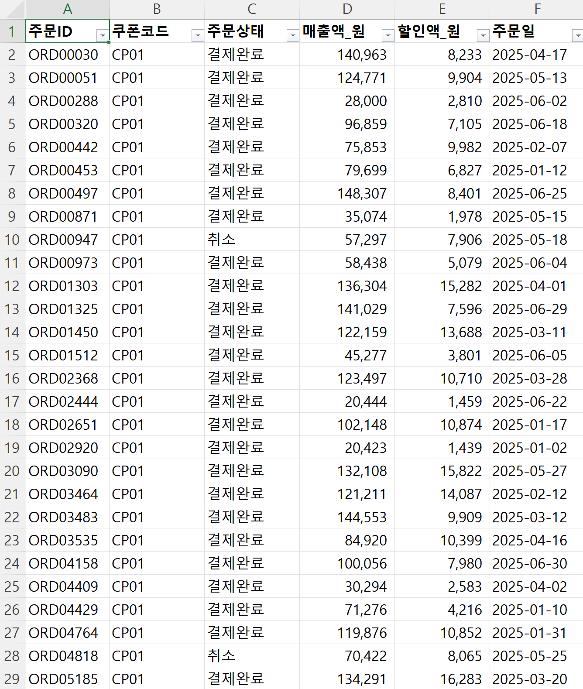
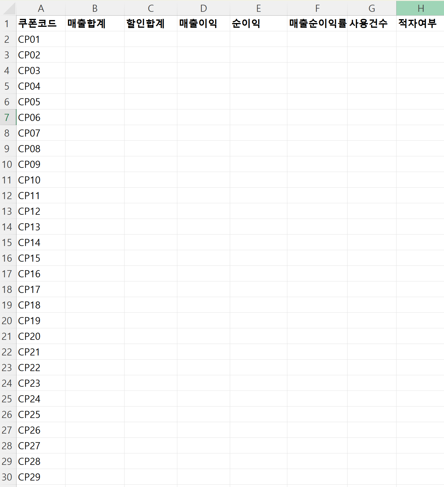

// 실습 3 · 쿠폰 성과 집계·인사이트
개요¶
한 줄 목표: 채널 5곳에 따로 온 주문 기록을 한 파일로 모은 뒤, 하나의 쿠폰 성과표로 줄이되 취소 주문에 속지 않고, 표에서 "그래서 뭘 해야 하나"까지 근거를 붙여 뽑는다.
오늘 받은 일¶
입사 3주차. 마케팅팀 사수가 말합니다.
"지난 반년 쿠폰을 44종 뿌렸는데 어떤 게 남고 어떤 게 밑지는지 아무도 몰라요. 주문 기록이 채널 5곳에서 파일로 따로 와요. 이걸 한 파일로 모은 다음, 쿠폰별로 매출·할인·순이익을 집계해 성과표를 채우고, 그래서 어떤 쿠폰을 접고 뭘 더 밀지 인사이트까지 정리해줘요. 우리 마진은 매출의 30%, 그리고 취소된 주문은 빼고 계산해요."
먼저 다섯 파일을 하나로 모으고, 쿠폰별로 줄인(집계) 뒤 그 표를 검산하고, 표에서 인사이트를 뽑아 그 인사이트까지 검산합니다.
폴더에 있는 것¶
| 파일 | 무엇 |
|---|---|
1~5.주문기록_*.xlsx |
채널 5곳(11번가·네이버·이마트·G마켓·쿠팡) 주문 기록, 파일마다 따로 (합 9,389건, 취소 포함, 판매채널 표시 없음) |
7.쿠폰별성과표.xlsx |
채워 넣을 빈 집계표 (쿠폰 44개, 칸 이름만 있음) |


실습에서 할 일¶
| 단계 | 할 일 |
|---|---|
| 1단계 | 채널 5곳 원본을 한 파일로 모은다 |
| 2단계 | 모은 표에서 쿠폰별로 성과표를 채운다 |
| 3단계 | 취소·평균 함정을 원본과 대조하며 집계를 검산한다 |
| 4단계 | 표에서 인사이트를 뽑고, 지어낸 해석이 없는지 검산한다 |